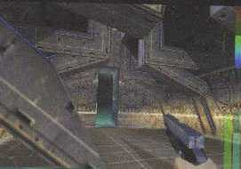
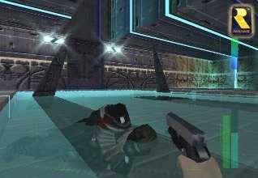
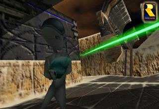
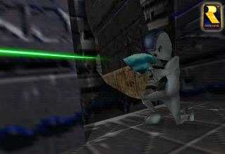
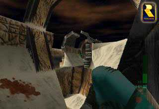
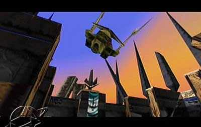
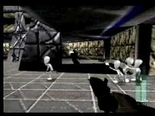
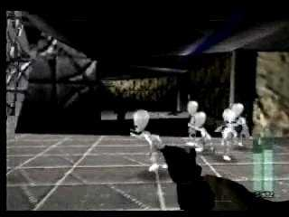

|
| Perfect
Dark Version Beta : Ruines Skedar |
| Ci-dessous
à Gauche, Joanna avec un Mauler. Rare l'a probablemment remplacé
par un Reaper, que l'on trouve un peu avant. Ci-dessous à Droite,
la
Salle du Chef Skedar, bien qu'elle n'ait pas trop changé je
crois. |


Ci-dessous, la Salle juste avant, avec un Garde Mort sur le Sol (Je me demande bien ce qu'il fout là !)Vous avez remarqué ? Il porte un des Casque disponible en Battle ! Celui que l'on voit au Début du Retour du Jedi (le Chasseur de Primes qui amène Chewbacc ). Notez aussi l'Absence de Capsules d'ou sortent les Skedar ! |

Ci-dessous, 2 Superbes Images de Soldats Roswells.


Ci-dessous, 4 Photos du Ciel, pour vous montrer les différentes teintes qu'il avait. Personnellement, j'adore celle avec le Ciel Brun ! |




Ci-dessous, une Photo de Joanna debout. Après avoir tué le Chef Skedar sans doute ?

Enfin,
3 Images qui viennent du Battle.
On reconnait clairement l'Arène Skedar.
Mais que font là les Roswels ? Un Challenge ?

